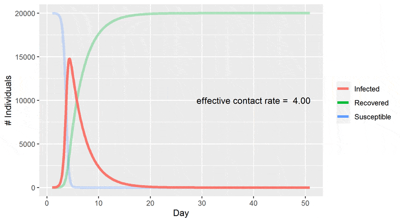

Introduction

Figure 1: Example of epidemic curves and the impact of simulated interventions.Epidemic systems exhibit complex dynamics arising from fundamental interactions between susceptible populations and infectious agents. The COVID-19 pandemic presents a particularly intricate case study, with transmission patterns influenced by multiple factors including social behavior, intervention strategies, and viral properties.
Mathematical models provide powerful tools to explore these dynamics, but they are only as reliable as the data and assumptions underlying them. In this project, you will implement compartmental models for COVID-19 transmission, focusing on grounding your simulations in realistic, biologically plausible parameters to investigate how different models and interventions capture actual pandemic trajectories.
Task
- Model Implementation: Implement at least two different compartmental models (e.g., SIR vs. SEIR) to highlight the structural differences required to realistically model COVID-19 (such as accounting for the disease's incubation period).
- Empirical Calibration: Establish your baseline parameters (e.g., transmission rate, recovery rate, latency period) using peer-reviewed literature. You must cite real-world data for your initial values.
- Plausible Simulations: Create simulations that track population movement between compartments over time. When designing intervention scenarios, restrict parameter changes to realistic bounds (e.g., a lockdown cannot reduce the contact rate to absolute zero; vaccines do not have 100% instant efficacy).
- Visualization: Visualize how biologically and socially plausible interventions alter infection curves compared to your empirical baseline.
Discussion Points
In your final report, be sure to address the following:
- Model Justification & Comparison: Analyze the structural differences between your chosen models. Specifically, discuss why a basic model might fail to capture realistic COVID-19 dynamics compared to an extended model (e.g., the realistic impact of the exposed/asymptomatic compartment).
- Parameter Selection & Validation: Detail your core parameters (e.g., basic reproduction number R0, recovery rate) and explicitly state the scientific literature used to ground them.
- Sensitivity Analysis: Vary parameters strictly within biologically and socially plausible ranges to demonstrate how sensitive the model is to real-world uncertainties. Explain why extreme, unrealistic outlier values were excluded.
- Realistic Intervention Analysis: Analyze the impact of interventions (e.g., delayed vaccine rollouts, imperfect social distancing adherence) and their timing. Discuss the limitations of assuming perfect compliance in models.
- Limitations: Candidly discuss the limitations of your mathematical models in representing true human behavior, spatial distribution, and viral mutation.
- Reflection: Share what you learned about the challenges of matching clean mathematical formulas to messy, real-world epidemiological data.